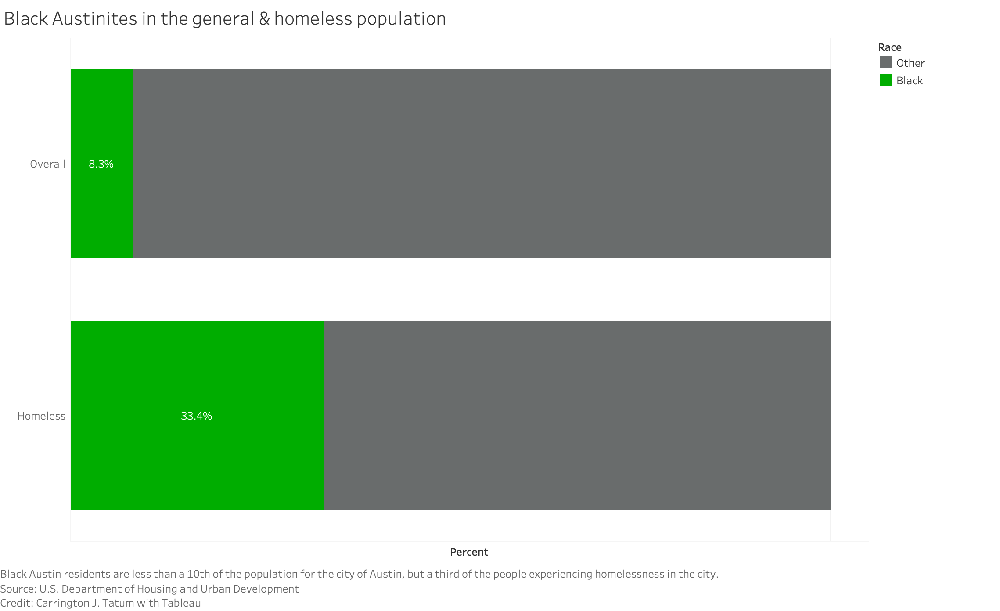
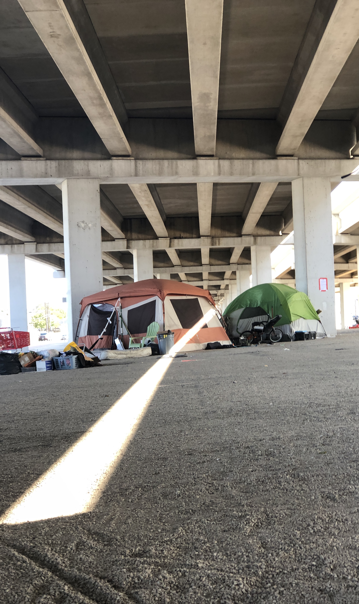
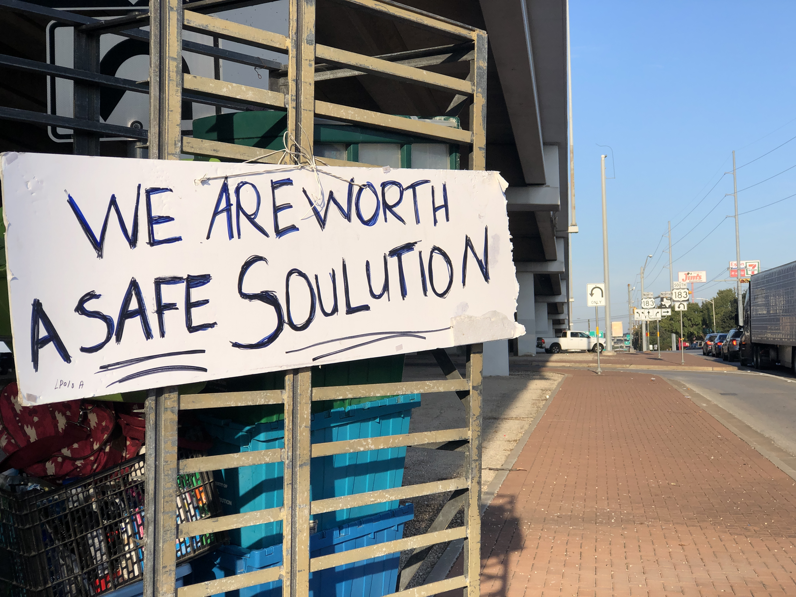

Black people are more likely to be homeless and no one knows how to fix it
April 20, 2020
by Carrington J. Tatum
cjt85@txstate.edu
People commuted down East Riverside Drive to work, to school, to their errands on a cloudy morning in Austin. Kenneth Rivers and two of his friends were in the middle of the traffic but had nowhere to go.
In the median of the busy road, Rivers was visiting the place he once called home. And the friends who still live there, he calls his family.
Rivers’ passion is writing raps, and while an Austin Police Department cruiser waited for the traffic light, Rivers explained that his music is the only place he feels heard.
You see that officer down there?,” he said, pointing to the patrol car. I can't tell him my story. He won't listen to it. My story is wrong to him. I can get arrested for my story...so I let everybody else experience my story. So that way they know where I'm coming from.
According to the Department of Housing and Urban Development, Black people are the most overrepresented race in homelessness across the United States. In other words, they make up more of the homeless population than their share of the general population.
Rivers was one of nearly 26,000 people experiencing homelessness in Texas, about 2,200 of which are in Austin. Dallas has the largest population experiencing homelessness in the state at about 4,500 people.
In Dallas, Black people are 25% of the total population but 61% of the homeless population. In Houston, Black people are 22% of the total population but 56% of the homeless population. In Austin, Black people are only 8% of the population -- but they’re 33% of the people experiencing homelessness.
Kenneth Rivers, 19, sat March 11 on the median he once slept on when he was homeless. Now he’s working on borrowed time to find himself a job and housing before he collapses his grandmother’s home. Photo by Carrington J. TatumContinuums of Care or CoCs are the agencies located in major cities charged with coordinating funding to solve homelessness. The leaders of efforts in Austin, Dallas and Houston are all aware of the disparity and align on the cause of the disparity.
Mike Nichols, the head of Houston’s CoC said homelessness is the consequence of the shortcomings of several functions of American society stacking on top of each other. And the historic inequity in those systems creates a unique pipeline to homelessness for Black people.
“I see the pipeline being criminal enforcement, the pipeline being mental health, the pipeline being poor education, the pipeline being poverty and discrimination,” Nichols said.
Matt Mollica, executive director of Austin ECHO, the Austin CoC, echoed the sentiment of Nichols but Mollica also stressed the need for racial representation. He said it’s difficult to equitably deliver services to people experiencing homelessness when all of the leadership is white including himself.
"I think that the inequity exists when we've got programs in place that are meant to serve a population of people that are disproportionately black and brown in those systems but the people providing the services don't have the same cultural sensitivity," Mollica said.
The racist history of American civil rights is marked by white federal, state and local government officials barring Black people from quality housing, education, health care, and jobs. All the while, the same officials used police forces, vigilantes and the courts to enact and excuse violence against Black communities.
A spokesperson for the Metro Dallas Homeless Alliance, Dallas’ CoC, David Gruber said this history and today’s evolution of racist policymaking causes heightened poverty among Black people. But Gruber, Mollica and Nichols said the fact that Black people are 40% of the homeless population can’t be explained simply by poverty.
"This can't be fully explained because the poverty rates amongst African Americans is higher,” Gruber said. “We all intuitively know that, right? But it's 26%, that doesn't explain that 40%.”
The light streak that slips through the concrete beams of the Austin overpasses Nov. 4, 2019 is the only warm spot in the cold tent community beneath it. Photo by Carrington J. TatumThe leaders tasked with fixing homelessness in Texas’ largest urban areas are all aware of the racial disparity and echoed each other when describing the causes of the disparity. Each director pointed to the same research study by C4 Innovations, a consultation firm that specializes in addressing homelessness as the source of their knowledge on the matter.
Marc Dones, the lead author on the report, confirmed the trio’s understanding but highlighted more specific causes of disparity including housing costs, criminal justice, and network impoverishment.
James, who asked that his last name not be used because he doesn’t want his family to know he’s homeless, moves from median to median in Austin. The 51-year-old worked in construction laying concrete until he split with his girlfriend last year and could no longer afford an apartment of his own.
"The way rent is out here, man, and the way they pay, the pay don't match the rent,” James said. “So we're really in a recession for people like us who got mediocre jobs or a high school education."
James, a Black man with limited education and skills, said it’s difficult to find a job but his criminal record doubles the challenge.
"I'm an ex-felon too, so once you get to that arena, it's twice as hard to get housing," he said.
Gruber said it can take longer for white people to fall into homelessness not only because of having access to more capital, but the wealth of their friends, family, coworkers, and church can give them more opportunities to recover from financial troubles than Black people on average.
“All of those things can make it more likely that you'll become homeless,” he said. “But at the end of the day the final step that is what causes you to be homeless, you fall through the net that would catch all the rest of us, which is your social network."
For Black people living in poverty, the question is what if you live in a community where everyone else is just as close to homelessness as your own family? Dones calls this question and what Gruber described, “network impoverishment.”
"The reason why we call it network impoverishment is because...folks would very often do this thing where, if I'm experiencing financial hardship, I might try to move in with a friend or a cousin or something else, right? And what we found Is that frequently that accelerated the experience of homelessness for everyone involved," Dones said.
Rivers was homeless after he got out of jail, but his grandmother allowed him to move into her apartment in southeast Austin.
“It's financially hard; it's not stable. I mean, it's stable — if I stay out the way,” he said.
But he said he needs to find a job and his own housing as soon as possible or put his family in the same position as himself.
“Because I need things like food, clothes and all that and if she gotta buy that then it's not gonna be stable for her because she got my brothers and sisters and my momma and all this stuff at the house,” he said.
So, what’s the solution?
None of the people tasked with addressing homelessness had a clear solution to inequity in homelessness, including researchers. But Dones remains confident that there is a solution to be found. But it won’t start without a conversation about reparations and strengthening America’s social safety net.
“It’s a clear but wrong narrative that we told ourselves about one that says, which is homelessness is the result of poverty. And that you can't fix homelessness without fixing poverty,” Dones said. “And moreover, as I think some of the more cynical lines of thought go, because we will never fix poverty, we could never fix homelessness. But that simply isn't true.”
Andrea Aguilar, 38, pinned a sign to the carts she used to carry her stuff away Nov. 4, 2019 from an Austin underpass anticipating Gov. Greg Abbott’s orders to clear homeless communities like hers. Photo by Carrington J. Tatum